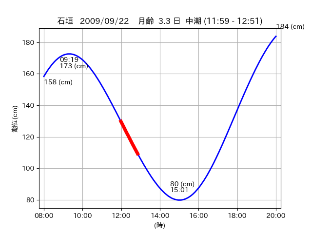

<!DOCTYPE html>
<html>
<head>
    
    <meta http-equiv="content-type" content="text/html; charset=UTF-8" />
    
        <script>
            L_NO_TOUCH = false;
            L_DISABLE_3D = false;
        </script>
    
    <style>html, body {width: 100%;height: 100%;margin: 0;padding: 0;}</style>
    <style>#map {position:absolute;top:0;bottom:0;right:0;left:0;}</style>
    <script src="https://cdn.jsdelivr.net/npm/leaflet@1.9.3/dist/leaflet.js"></script>
    <script src="https://code.jquery.com/jquery-3.7.1.min.js"></script>
    <script src="https://cdn.jsdelivr.net/npm/bootstrap@5.2.2/dist/js/bootstrap.bundle.min.js"></script>
    <script src="https://cdnjs.cloudflare.com/ajax/libs/Leaflet.awesome-markers/2.0.2/leaflet.awesome-markers.js"></script>
    <link rel="stylesheet" href="https://cdn.jsdelivr.net/npm/leaflet@1.9.3/dist/leaflet.css"/>
    <link rel="stylesheet" href="https://cdn.jsdelivr.net/npm/bootstrap@5.2.2/dist/css/bootstrap.min.css"/>
    <link rel="stylesheet" href="https://netdna.bootstrapcdn.com/bootstrap/3.0.0/css/bootstrap-glyphicons.css"/>
    <link rel="stylesheet" href="https://cdn.jsdelivr.net/npm/@fortawesome/fontawesome-free@6.2.0/css/all.min.css"/>
    <link rel="stylesheet" href="https://cdnjs.cloudflare.com/ajax/libs/Leaflet.awesome-markers/2.0.2/leaflet.awesome-markers.css"/>
    <link rel="stylesheet" href="https://cdn.jsdelivr.net/gh/python-visualization/folium/folium/templates/leaflet.awesome.rotate.min.css"/>
    
            <meta name="viewport" content="width=device-width,
                initial-scale=1.0, maximum-scale=1.0, user-scalable=no" />
            <style>
                #map_e508eaa4ac92267c7a9a0763539929a6 {
                    position: relative;
                    width: 2048.0px;
                    height: 1600.0px;
                    left: 0.0%;
                    top: 0.0%;
                }
                .leaflet-container { font-size: 1rem; }
            </style>
        
</head>
<body>
    
    
            <div class="folium-map" id="map_e508eaa4ac92267c7a9a0763539929a6" ></div>
        
</body>
<script>
    
    
            var map_e508eaa4ac92267c7a9a0763539929a6 = L.map(
                "map_e508eaa4ac92267c7a9a0763539929a6",
                {
                    center: [24.348, 123.681],
                    crs: L.CRS.EPSG3857,
                    ...{
  "zoom": 12,
  "zoomControl": true,
  "preferCanvas": false,
}

                }
            );

            

        
    
            var tile_layer_01dfbdbc4420ffa597c45e097fa31ec6 = L.tileLayer(
                "https://cyberjapandata.gsi.go.jp/xyz/seamlessphoto/{z}/{x}/{y}.jpg",
                {
  "minZoom": 0,
  "maxZoom": 18,
  "maxNativeZoom": 18,
  "noWrap": false,
  "attribution": "\u5730\u7406\u9662\u5730\u56f3",
  "subdomains": "abc",
  "detectRetina": false,
  "tms": false,
  "opacity": 1,
}

            );
        
    
            tile_layer_01dfbdbc4420ffa597c45e097fa31ec6.addTo(map_e508eaa4ac92267c7a9a0763539929a6);
        
    
            var marker_a9039f9f22737b8702c52f37817b89cf = L.marker(
                [24.288, 123.674],
                {
}
            ).addTo(map_e508eaa4ac92267c7a9a0763539929a6);
        
    
            var icon_547f780be5aefd5594553a85892831af = L.AwesomeMarkers.icon(
                {
  "markerColor": "orange",
  "iconColor": "white",
  "icon": "info-sign",
  "prefix": "glyphicon",
  "extraClasses": "fa-rotate-0",
}
            );
        
    
        var popup_9951c556298d7242b87ffa28905e753a = L.popup({
  "maxWidth": "100%",
});

        
            
                var html_38355da5a0e575fd18bae9bf8c37f75e = $(`<div id="html_38355da5a0e575fd18bae9bf8c37f75e" style="width: 100.0%; height: 100.0%;"><table><tr><td></td></tr><tr><td><center>20090922 No.1 </center></table></td></tr></table</div>`)[0];
                popup_9951c556298d7242b87ffa28905e753a.setContent(html_38355da5a0e575fd18bae9bf8c37f75e);
            
        

        marker_a9039f9f22737b8702c52f37817b89cf.bindPopup(popup_9951c556298d7242b87ffa28905e753a)
        ;

        
    
    
                marker_a9039f9f22737b8702c52f37817b89cf.setIcon(icon_547f780be5aefd5594553a85892831af);
            
    
            var poly_line_25593951e2d1b96fb152d3b3752146ef = L.polyline(
                [[24.288, 123.674], [24.2848, 123.6766]],
                {"bubblingMouseEvents": true, "color": "#00FFFF", "dashArray": null, "dashOffset": null, "fill": false, "fillColor": "#00FFFF", "fillOpacity": 0.2, "fillRule": "evenodd", "lineCap": "round", "lineJoin": "round", "noClip": false, "opacity": 1.0, "smoothFactor": 1.0, "stroke": true, "weight": 3}
            ).addTo(map_e508eaa4ac92267c7a9a0763539929a6);
        
    
            var marker_5eb8b2bc1a9ee7b611c42f1ec3defe60 = L.marker(
                [24.2806, 123.6846],
                {
}
            ).addTo(map_e508eaa4ac92267c7a9a0763539929a6);
        
    
            var icon_80ae24259a7df68bfe7cb0626a15a500 = L.AwesomeMarkers.icon(
                {
  "markerColor": "orange",
  "iconColor": "white",
  "icon": "info-sign",
  "prefix": "glyphicon",
  "extraClasses": "fa-rotate-0",
}
            );
        
    
        var popup_c3b336cd4c5740da6768408d87bce9fb = L.popup({
  "maxWidth": "100%",
});

        
            
                var html_5e77c1c558765170a28fda4f526b2f85 = $(`<div id="html_5e77c1c558765170a28fda4f526b2f85" style="width: 100.0%; height: 100.0%;"><table><tr><td></td></tr><tr><td><center>20090922 No.2 </center></table></td></tr></table</div>`)[0];
                popup_c3b336cd4c5740da6768408d87bce9fb.setContent(html_5e77c1c558765170a28fda4f526b2f85);
            
        

        marker_5eb8b2bc1a9ee7b611c42f1ec3defe60.bindPopup(popup_c3b336cd4c5740da6768408d87bce9fb)
        ;

        
    
    
                marker_5eb8b2bc1a9ee7b611c42f1ec3defe60.setIcon(icon_80ae24259a7df68bfe7cb0626a15a500);
            
    
            var poly_line_0e1e7c559b0260a28d54933426bc5137 = L.polyline(
                [[24.2806, 123.6846], [24.2791, 123.6895]],
                {"bubblingMouseEvents": true, "color": "#00FFFF", "dashArray": null, "dashOffset": null, "fill": false, "fillColor": "#00FFFF", "fillOpacity": 0.2, "fillRule": "evenodd", "lineCap": "round", "lineJoin": "round", "noClip": false, "opacity": 1.0, "smoothFactor": 1.0, "stroke": true, "weight": 3}
            ).addTo(map_e508eaa4ac92267c7a9a0763539929a6);
        
    
            var marker_24cba2130f89995e856b218e641a4885 = L.marker(
                [24.3483, 123.6871],
                {
}
            ).addTo(map_e508eaa4ac92267c7a9a0763539929a6);
        
    
            var icon_6c681676339e2f6068da7834c4f62c75 = L.AwesomeMarkers.icon(
                {
  "markerColor": "orange",
  "iconColor": "white",
  "icon": "info-sign",
  "prefix": "glyphicon",
  "extraClasses": "fa-rotate-0",
}
            );
        
    
        var popup_ecc2af78842c19965ea78b8614841bf4 = L.popup({
  "maxWidth": "100%",
});

        
            
                var html_164e095b26f0b6d4d971a9e7f2b1e4ce = $(`<div id="html_164e095b26f0b6d4d971a9e7f2b1e4ce" style="width: 100.0%; height: 100.0%;"><table><tr><td></td></tr><tr><td><center>20090922 No.3 </center></table></td></tr></table</div>`)[0];
                popup_ecc2af78842c19965ea78b8614841bf4.setContent(html_164e095b26f0b6d4d971a9e7f2b1e4ce);
            
        

        marker_24cba2130f89995e856b218e641a4885.bindPopup(popup_ecc2af78842c19965ea78b8614841bf4)
        ;

        
    
    
                marker_24cba2130f89995e856b218e641a4885.setIcon(icon_6c681676339e2f6068da7834c4f62c75);
            
    
            var poly_line_7665c8d665381c942d654939452426a5 = L.polyline(
                [[24.3483, 123.6871], [24.3468, 123.6753]],
                {"bubblingMouseEvents": true, "color": "#00FFFF", "dashArray": null, "dashOffset": null, "fill": false, "fillColor": "#00FFFF", "fillOpacity": 0.2, "fillRule": "evenodd", "lineCap": "round", "lineJoin": "round", "noClip": false, "opacity": 1.0, "smoothFactor": 1.0, "stroke": true, "weight": 3}
            ).addTo(map_e508eaa4ac92267c7a9a0763539929a6);
        
</script>
</html>